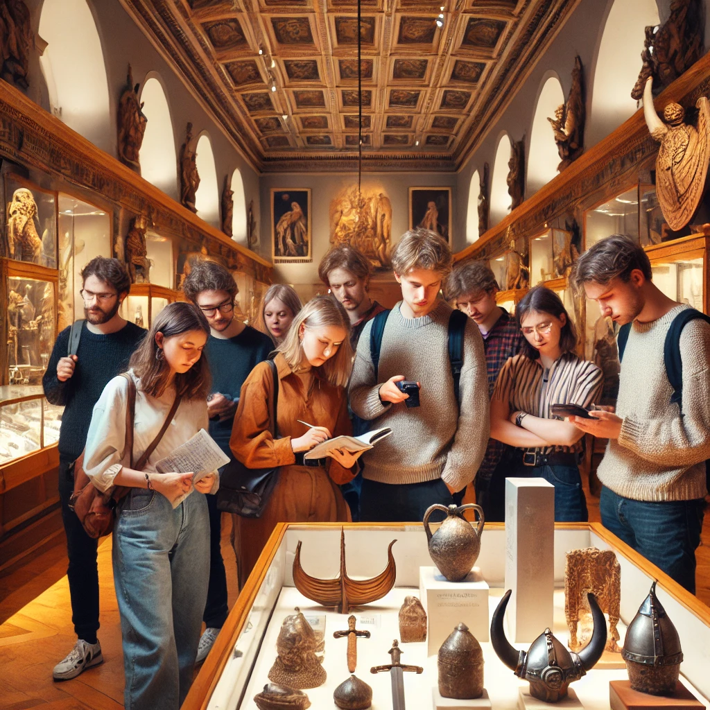
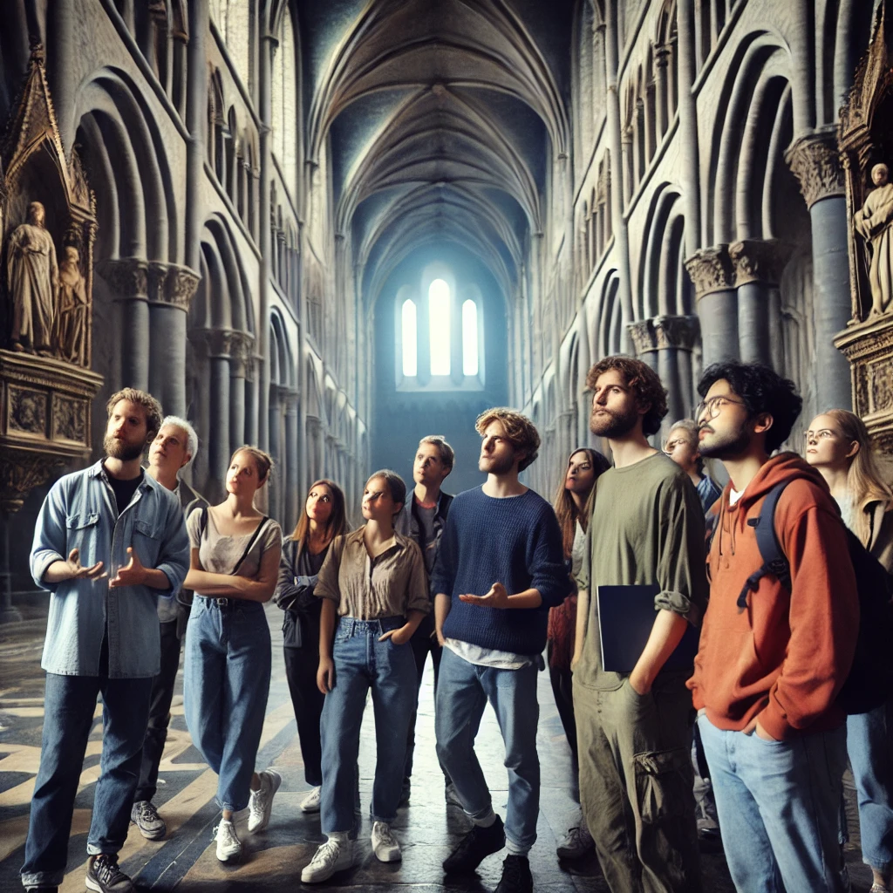
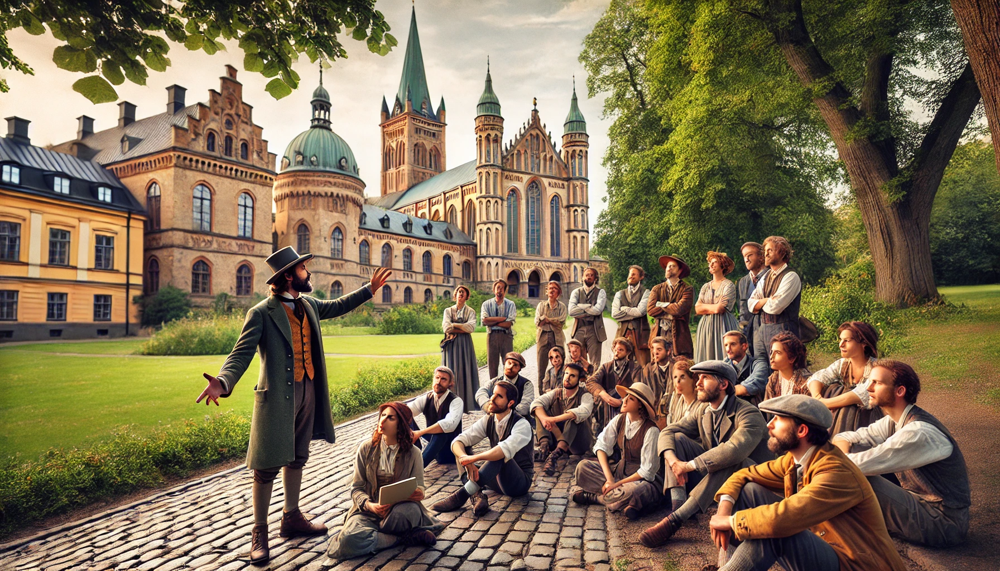

Välkommen till den fantastiska föreningen Gyas Vänner! där man tar historienörderi på allvar! Mitt namn är Jesper Blomdahl och jag är både grundare och ordförande i denna fantastiska föreningen.
Det är en dröm som har gått i uppfyllelse för mig, att samla alla historienördar runt mig och riktigt gotta mig det jag brinner för - historia!
Och det är historienördar i alla åldrar och på alla, både nybörjare och proffs som älskar historia och att mötas och prata historia! Det har varit viktigt för mig, alla kan bidra!
Vi är lokaliserade i Skåne så mycket är centrerat kring Skånes historia men vi har inga gränser egentligen!
Välkommen och utforska vårt material och våra aktiviteter och bli gärna medlem!
Vi anordnar flera aktiviteter i föreningens regi, tex föreläsningar, studiecirklar och utflykter, se aktiviteter för mer info!
Ett exempel på utflykt är den vi hade i somras i Lund. Det var en vandring runt Lundagård i centrala Lund med många stopp på historiskt intressanta platser, här följer en beskrivning:
Utflykt till historiska Lund med Gyas vänner
Lördagen den 20/7 2024 samlades föreningen Gyas vänner i hjärtat av Lund för en dag fylld av historiska upptäckter. Lund, en av Sveriges äldsta städer, bjöd på en fascinerande resa genom tidens gång – från medeltida domkyrkobyggen till 1800-talets akademiska traditioner.
Vi inledde vår utflykt med ett besök på Kulturen i Lund, ett friluftsmuseum där vi fick en unik inblick i hur människor har levt genom århundradena. Vi vandrade genom historiska stadskvarter, tittade in i välbevarade hus och diskuterade hur olika epoker har påverkat Skånes utveckling.
Därefter begav vi oss till Historiska museet vid Lunds universitet, där vi imponerades av de rika fynden från Skånes forntid. En av höjdpunkterna var det berömda skattkammaren, där vi fick se medeltida kyrkliga skatter och föremål från vikingatiden. Dessutom fascinerades vi av Bäckaskogskvinnan, ett av Sveriges mest kända stenåldersskelett, som gav oss en konkret koppling till regionens förhistoriska befolkning.
Efter en lunchpaus på ett av stadens anrika kaféer fortsatte vi mot Lunds domkyrka, en ikonisk symbol för både staden och den nordiska medeltiden. Vi beundrade den magnifika arkitekturen, studerade den mytomspunna Jätten Finn och följde det fascinerande astronomiska uret, som fortfarande slår sina timmar med anor från 1400-talet.
Dagen avslutades med en guidad tur i Lundagård, det gamla stadskvarteret där universitetets äldsta byggnader ligger. Vår guide berättade engagerat om universitetets historia, från dess grundande på 1600-talet till studentuppror och akademiska traditioner genom seklerna. Vi fick även höra spännande historier om de gamla byggnaderna, såsom Kungshuset och Universitetshuset.
Efter en dag fylld av historiska insikter och nya upptäckter skildes vi åt, nöjda och inspirerade av Lunds rika kulturarv. Vi ser redan fram emot nästa historiska utflykt!
Här är en intervju med en av deltagarna:
Intervju med Erik, historieentusiast och medlem i "Gyas vänner" Reporter: Hej Erik! Du var med på utflykten till Kulturen, Domkyrkan och Historiska museet i Lund. Hur var upplevelsen?
Erik: Hej! Ja, det var helt fantastiskt! Det är något speciellt med att vandra genom historiska miljöer och få känna historiens vingslag på nära håll. Jag har varit på alla dessa platser tidigare, men att uppleva dem tillsammans med andra historieintresserade gör att man ser saker ur nya perspektiv. Jag vill verkligen rikta ett stort tack till Gyas vänner för att de anordnade den här utflykten!
Reporter:Vad var det mest minnesvärda för dig under dagen?
Erik: Oj, svårt att välja! Men jag måste nog säga att besöket i Lunds domkyrka var höjdpunkten. Kryptan där nere med de mystiska stenpelarna och Jätten Finns mytologi fascinerar mig alltid. Vi fick dessutom en riktigt engagerad guide som berättade detaljer jag aldrig hört förut!
Reporter: Historiska museet har ju en hel del spännande utställningar. Hittade du något där som fångade ditt intresse?
Erik: Absolut! Jag fastnade vid deras samling av vikingafynd, särskilt de runstenar och smycken de har där. Jag tycker det är otroligt häftigt att se så välbevarade föremål från den tiden – det känns nästan som att de berättar sina egna historier.
Reporter: Vad betyder historia för dig personligen?
Erik: För mig är historia inte bara något som hände förr, det är en levande del av vår identitet. Genom att förstå var vi kommer ifrån kan vi också förstå oss själva och vår samtid bättre. Och så är det ju också riktigt roligt att grotta ner sig i gamla berättelser, upptäcka detaljer och fundera över hur människor levde förr.
Reporter: Avslutningsvis, har du något du vill säga till andra historieintresserade?
Erik: Ja! Om du är det minsta intresserad av historia – gå med i Gyas vänner! Det är en fantastisk förening med likasinnade entusiaster, och de anordnar både spännande föreläsningar och utflykter som den vi var på idag. Man lär sig massor, träffar härliga människor och har riktigt kul samtidigt. Jag kan verkligen rekommendera det!